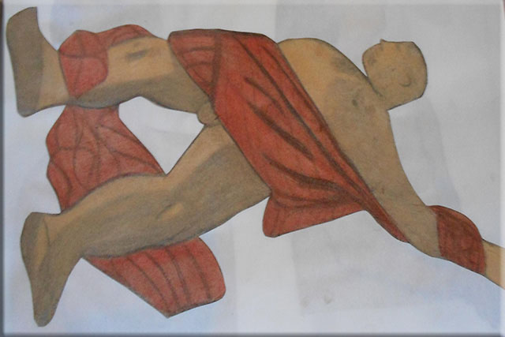
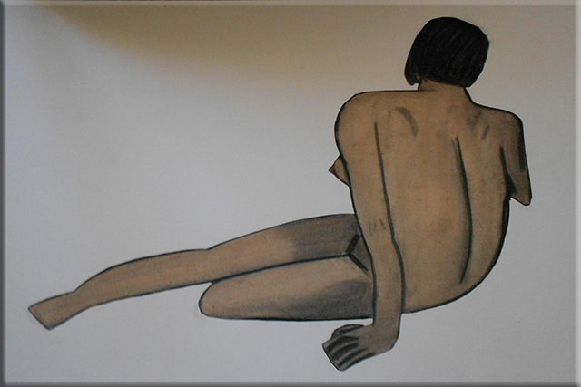
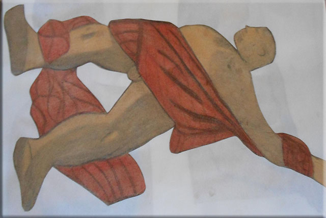
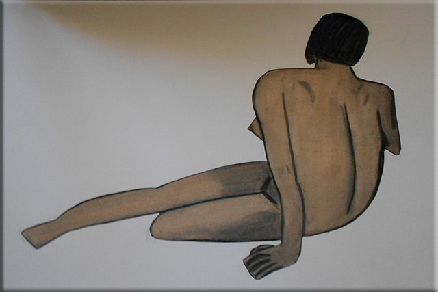
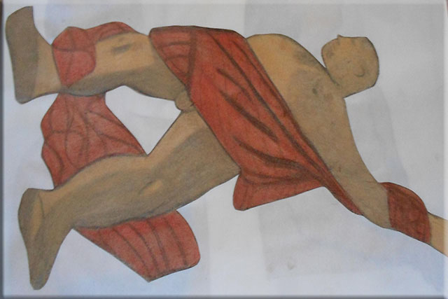
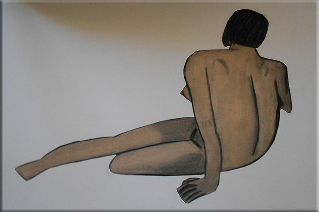
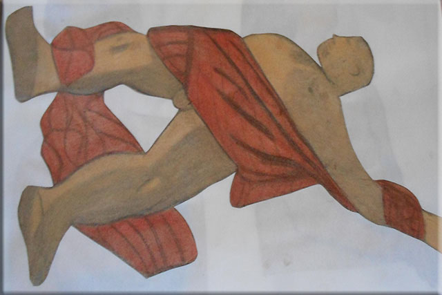
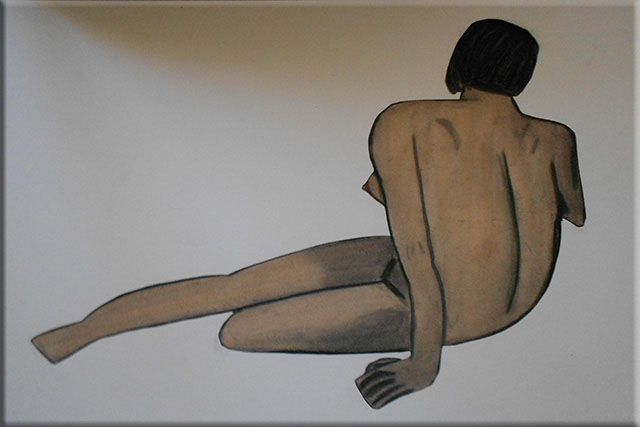

 



It was not until I took life drawing that I discovered a passion for figurative drawing. Life drawing is essential for an illustrator. I challenge myself to try different styles and techniques to refine my drawing skills. I draw figures in compressed charcoal, graphite pencils, pastels, and markers. I use stylized marks to capture the gesture of the figure. Drawing sessions can be from 15-minute gestures to one-hour poses of a live model. I strive for realism in my drawings. My work consists of figure drawings and my main goal is to experiment with composition, color, and texture. I enjoy working with charcoal and pastels. I use photographic references to create stylistic and expressive artwork.
I am interested in drawing, collage, and painting. My artwork encompasses my love of drawing, design, photography, acrylic painting, and layering textures through mixed media. I love nature and landscape photography. My drawings are an outlet for personal expression and a process of transforming a blank piece of paper into a piece of artwork. I draw to capture the beauty found in nature and as a form of personal expression. I create artwork as a means of personal expression. I use mixed media techniques of combining pastels, charcoal, markers, and construction paper to evoke a visual sensation.